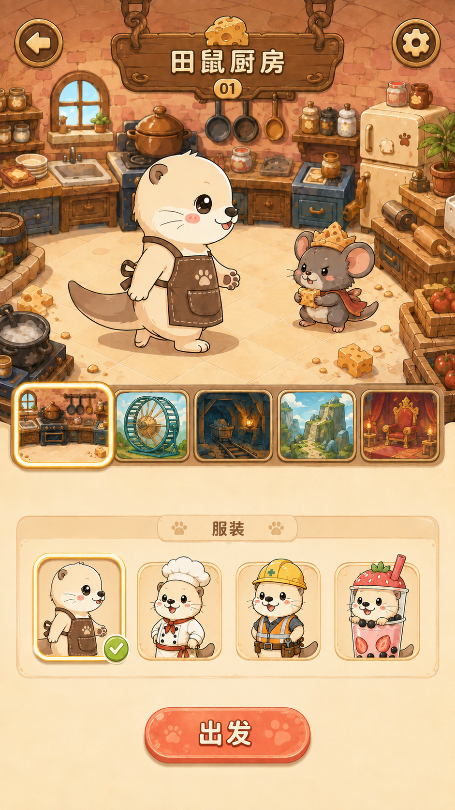
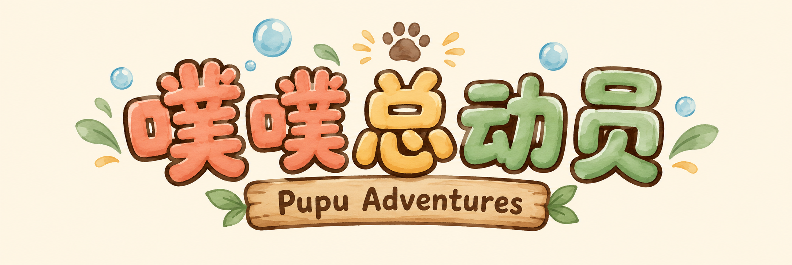
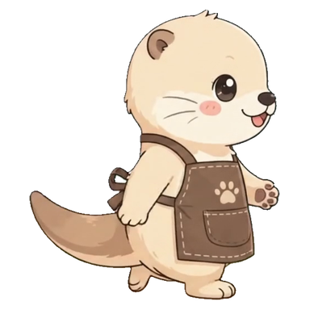
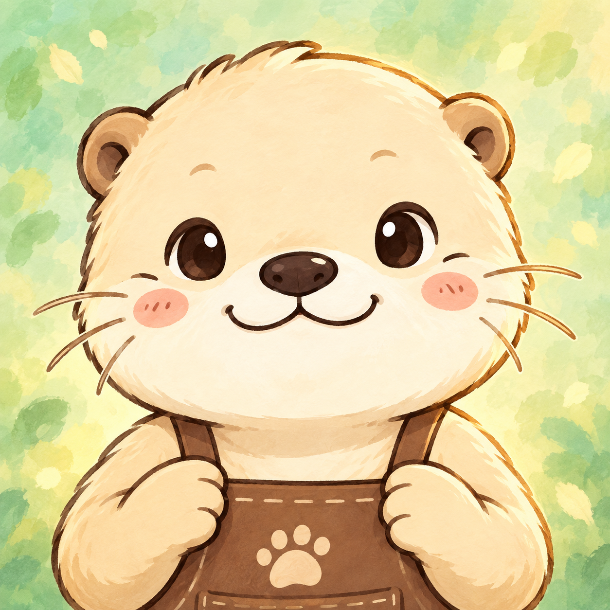

封面
V5美术参考

已确认的美术方向：温暖厨房、轻巧组件与柔和轮廓。
V7现有游戏截图

保留作对照，旧游戏包与素材未改动。
V8组件审核稿


一只水獭，守住五个小世界
只需移动 · 招式自动释放
文字、图标、按钮与底板分别排版，整屏等比缩放。
APP 图标 / 围裙水獭大头像

这里只检查裁切和小尺寸辨识度；Android 与 Windows 安装图标尚未接入。
游戏 Logo / 噗噗总动员
暖白底 RGB 审核稿；透明版与平台规格资源在方向确认后制作。
本页为第一轮视觉审核，尚未接入 Unity。厨房背景仅作美术对照；25 波节奏、掉落道具及装饰无限地图均在后续批次。